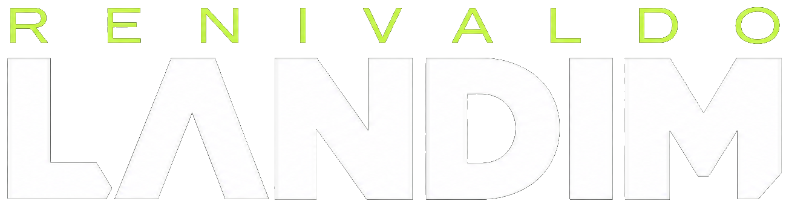
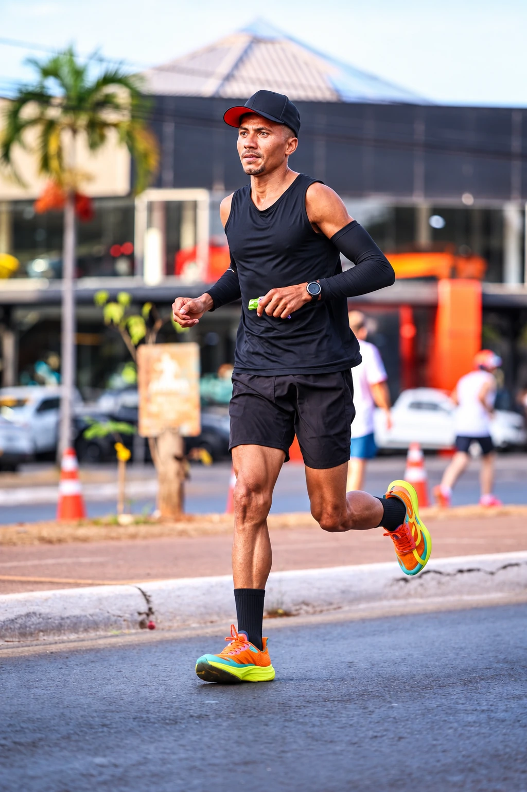
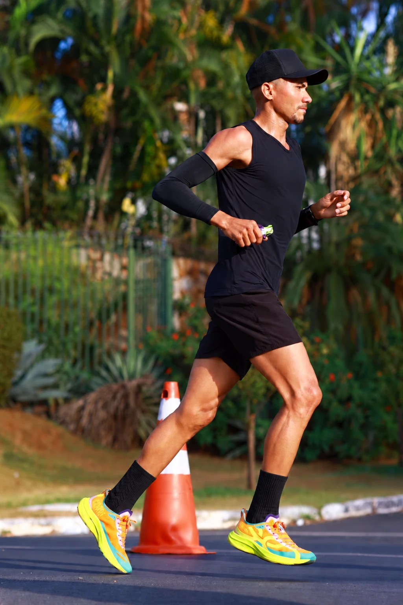
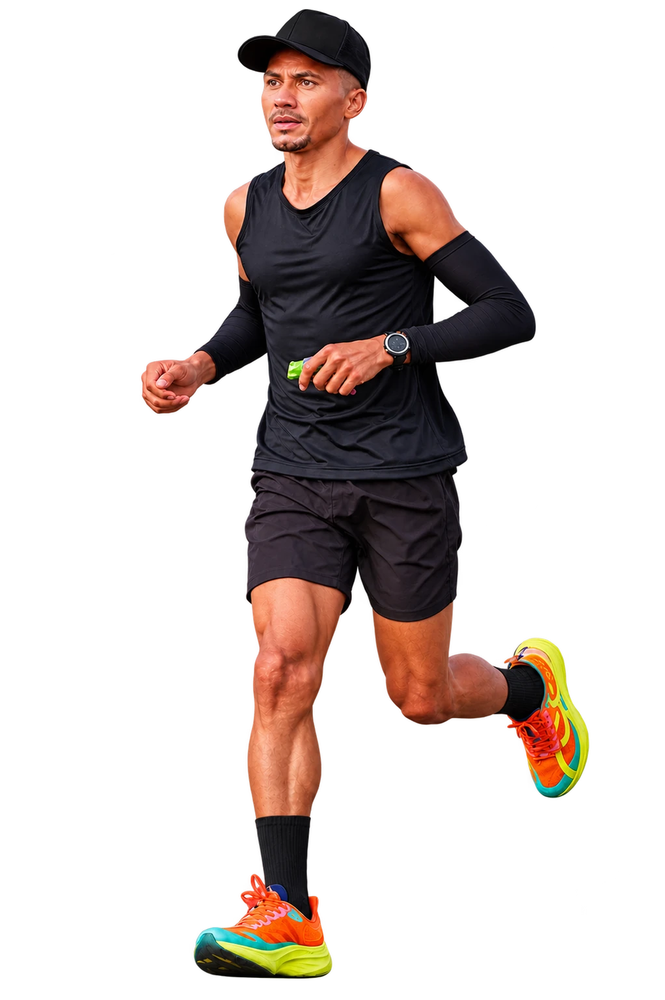

Constância
Treinos antes do trabalho e compromisso diário com a evolução.

Corra junto
RENIVALDO LANDIM · GOIÂNIA, GO
Do interior do Maranhão aos pódios.
Uma vida em movimento. Um futuro no esporte.
01 / O ATLETA
CORRIDA DE RUA
RENIVALDO LANDIM FERREIRA
Nasci em Feira Nova do Maranhão, em 19 de janeiro de 1996. Sou o quarto de quatorze irmãos. Desde cedo, trabalhei na roça para ajudar meus pais. Saí de casa em busca de oportunidades, passei pelo Tocantins e, desde 2020, faço de Goiânia o meu lar.
A corrida entrou na minha vida durante a pandemia. O que começou como uma forma de aliviar a tensão se tornou meu estilo de vida, minha identidade e minha busca diária por evolução.
Hoje, concilio os treinos com o trabalho como operador de máquinas de corte e vinco. Muitas vezes, o dia começa às 5 horas da manhã. Em outras, o treino vem depois de uma longa jornada. A vontade de evoluir continua.
A dedicação se transforma em resultado02 / TRAJETÓRIA
RESULTADOS · 2024–2026Cada prova traz experiência, resistência e um novo motivo para buscar a minha melhor versão.
Recordes pessoais e histórico de provas informados pelo atleta.
REGISTROS DE CONQUISTAS
Da preparação à celebração.
Momentos que fazem parte da jornada.Toque nas fotos para ampliar ↗
03 / EM MOVIMENTO
ACOMPANHE A PASSADAA rua como cenário.
A corrida como expressão.
A PRÓXIMA
ETAPA PODE
TER A SUA
MARCA.
04 / OBJETIVOS
O FUTURO ESTÁ À FRENTEMeu principal objetivo é ser atleta profissional em tempo integral e disputar os maiores circuitos nacionais de corrida de rua. O próximo passo exige dedicação, estrutura e parceiros que acreditem nessa jornada.
05 / POR QUE APOIAR
UMA PARCERIA COM PROPÓSITOA marca que apoia Landim se conecta a uma trajetória real de disciplina, trabalho e superação. Cada prova leva essa mensagem para as ruas.
Treinos antes do trabalho e compromisso diário com a evolução.
Resultados expressivos construídos em provas e pódios reais.
Uma parceria que aparece no uniforme, nas provas e no conteúdo do atleta.
06 / CREDENCIAIS
CONHEÇA O PROJETOLandim leva para cada prova a disciplina de quem construiu seu caminho com trabalho, constância e propósito.
“A evolução do Landim mostra o que a constância pode construir. Ele treina cedo, trabalha e ainda chega competitivo nas provas.”— Depoimento de acompanhamento esportivo
“A presença dele nas corridas é marcada por respeito, foco e vontade de melhorar a cada chegada.”— Depoimento de organização de prova
INFORMAÇÕES PARA A SUA MARCA
Estes dados mostram onde o Landim está e quais ações podem fazer parte da parceria.
07 / PARCERIAS
UM CONVITE PARA A SUA MARCAApoiar um atleta é participar da sua evolução. Vamos desenhar uma parceria que conecte os objetivos da sua marca à jornada esportiva de Landim.
O QUE SUA MARCA RECEBE
A parceria pode combinar presença, conteúdo e relacionamento de acordo com os objetivos da empresa.
FORMATOS DE INVESTIMENTO
Valores de referência para iniciar a conversa. O formato final é definido em conjunto.
Para inscrições, suplementos, equipamentos e deslocamentos.
Conversar sobre este formato ↗Logo no uniforme, conteúdo e presença contínua nas provas.
Conversar sobre este formato ↗Maior destaque, ações personalizadas e associação principal ao projeto.
Conversar sobre este formato ↗Os valores são referências iniciais e podem ser ajustados conforme objetivos, duração e entregas da parceria.
Cada parceria é construída em conjunto. Formatos, entregas, uso de imagem e duração são definidos de acordo com os objetivos de ambas as partes.
FALE DIRETAMENTE COM O ATLETA

08 / O PRÓXIMO PASSO
Sua marca pode fazer parte
do que vem pela frente.
WhatsApp: 62 99370-7703 · Instagram: @landim_r4 · atletalandim@gmail.com